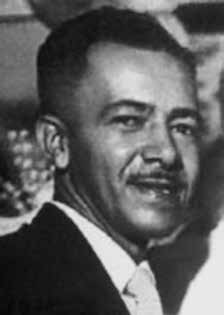

Newton
Eduardo
de Oliveira
CIRCUNSTÂNCIAS DA MORTE
Newton Eduardo de Oliveira morreu no dia 1º de setembro de 1964, tendo se suicidado após ter vivido cinco meses na clandestinidade e temendo possíveis ações dos agentes da repressão contra sua família. Desde o Golpe Militar de abril de 1964, Newton Eduardo passou a ser perseguido por forças de repressão do regime recém-instalado e teve seus direitos políticos cassados pelo Ato Institucional no 1, de 9 de abril de 1964, quando passou a viver na clandestinidade.
Antes do ato de suicídio, Newton Eduardo escreveu uma carta em que justificava sua decisão: “A morte ou a prisão, com todas as consequências de uma polícia desumana e cruel. Preferi a morte”.
De acordo com a edição de 4 de setembro de 1964 do jornal Última Hora, a carta deixada por Newton apresentava “algumas passagens com frases sem sentido, por estarem incompletas, em vista da tortura mental em que se debatia o líder sindical”.
Entretanto, em processo apresentado pela família de Newton à CEMDP, foi anexada uma declaração prestada por Clodesmidt Riani, ex-presidente da Confederação Nacional dos Trabalhadores nas Indústrias entre 1962 e 1964, que conhecia Newton há muitos anos, afirmando que nunca havia demonstrado “qualquer perturbação mental e sempre sendo responsável pelos cargos na representação dos trabalhadores”.
As pesquisas realizadas no âmbito da Comissão Nacional da Verdade demonstraram que Newton Eduardo de Oliveira passou a viver na clandestinidade logo após o Golpe Militar de abril de 1964, quando teve seus direitos políticos cassados pelo AI-1, apenas oito dias após o golpe.
Nos meses que se seguiram, viveu com muitas dificuldades, com medo da prisão e sem opções de atividade profissional. Na carta que deixou para a família, em que explica as razões que o levaram ao suicídio, Newton escreveu: “a fome ronda o meu lar”. Os restos mortais de Newton Eduardo de Oliveira foram enterrados no Cemitério São João Batista, no Rio de Janeiro.
Newton Eduardo de Oliveira died on September 1, 1964, having committed suicide after living five months in hiding and fearing possible actions by agents of repression against his family. Since the Military Coup of April 1964, Newton Eduardo began to be persecuted by repressive forces of the newly installed regime and had his political rights revoked by Institutional Act No. 1, of April 9, 1964, when he began to live in hiding.
Before committing suicide, Newton Eduardo wrote a letter justifying his decision: "Death or prison, with all the consequences of an inhumane and cruel police force. I preferred death."
According to the September 4, 1964 edition of the newspaper Última Hora, the letter left by Newton contained “some passages with meaningless sentences, as they were incomplete, in view of the mental torture in which the union leader was undergoing”.
However, in a process presented by Newton's family to CEMDP, a statement was attached by Clodesmidt Riani, former president of the National Confederation of Industrial Workers between 1962 and 1964, who had known Newton for many years, stating that he had never demonstrated “any mental disturbance and was always responsible for the positions in the workers' representation”.
Research carried out within the scope of the National Truth Commission demonstrated that Newton Eduardo de Oliveira began to live in hiding shortly after the Military Coup of April 1964, when his political rights were revoked by the AI-1, just eight days after the coup.
In the months that followed, he lived with many difficulties, in fear of prison and without options for professional activity. In the letter he left for his family, in which he explained the reasons that led him to commit suicide, Newton wrote: “hunger haunts my home”. The remains of Newton Eduardo de Oliveira were buried in the São João Batista Cemetery, in Rio de Janeiro.
Newton Eduardo de Oliveira murió el 1 de septiembre de 1964, habiéndose suicidado después de vivir cinco meses escondido y temiendo posibles acciones de agentes de represión contra su familia. A partir del Golpe Militar de abril de 1964, Newton Eduardo comenzó a ser perseguido por las fuerzas represivas del régimen recién instalado y le fueron revocados sus derechos políticos mediante el Acto Institucional No. 1, del 9 de abril de 1964, cuando comenzó a vivir en la clandestinidad.
Antes de suicidarse, Newton Eduardo escribió una carta justificando su decisión: "Muerte o prisión, con todas las consecuencias de una policía inhumana y cruel. Preferí la muerte".
Según la edición del diario Última Hora del 4 de septiembre de 1964, la carta dejada por Newton contenía “algunos pasajes con frases sin sentido, por estar incompletas, dada la tortura mental que padecía el dirigente sindical”.
Sin embargo, en un proceso presentado por la familia de Newton al CEMDP, se adjuntó una declaración de Clodesmidt Riani, ex presidente de la Confederación Nacional de Trabajadores Industriales entre 1962 y 1964, que conocía a Newton desde hacía muchos años, afirmando que nunca había demostrado “ningún trastorno mental y siempre fue responsable de los cargos en la representación de los trabajadores”.
Investigaciones realizadas en el ámbito de la Comisión Nacional de la Verdad demostraron que Newton Eduardo de Oliveira comenzó a vivir en la clandestinidad poco después del Golpe Militar de abril de 1964, cuando sus derechos políticos fueron revocados por la AI-1, apenas ocho días después del golpe.
En los meses siguientes vivió con muchas dificultades, con miedo a la cárcel y sin opciones de actividad profesional. En la carta que dejó a su familia, en la que explicaba los motivos que le llevaron a suicidarse, Newton escribió: “el hambre acecha en mi casa”. Los restos de Newton Eduardo de Oliveira fueron enterrados en el cementerio de São João Batista, en Río de Janeiro.